漫画版
第一話「橋へ向かった男」
主な登場人物

聞き取りや写真を照らし合わせ、証拠がどこから来たかを追う捜査担当。朝倉（右）
水城と現場を回る記録担当。証言を書き留め、写真や時刻の食い違いを一緒に調べる。
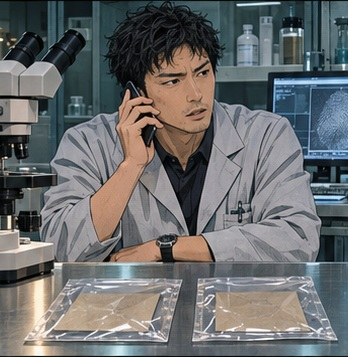
鑑識担当。現物に残った傷や痕跡を調べる。
水城たちの上司。証拠の確認を指示し、捜査の進め方を判断する。

古道具屋「蔵の市」の主人。店の古道具をよく知り、水城たちの聞き込みに応じる。
警察署・資料室
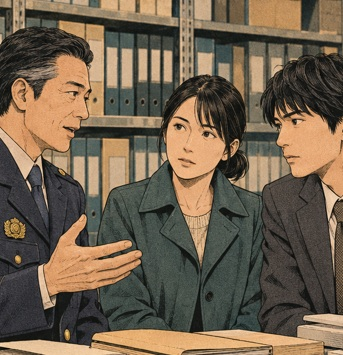
今日から現場記録を手伝う朝倉だ。蔵の市で展示品が消えた。二人で聞いてきてくれ。
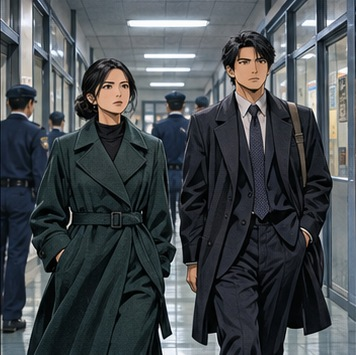
記録担当も現場へ？
記録からこぼれる声を、じかに聞きたい。
少し前・蔵の市
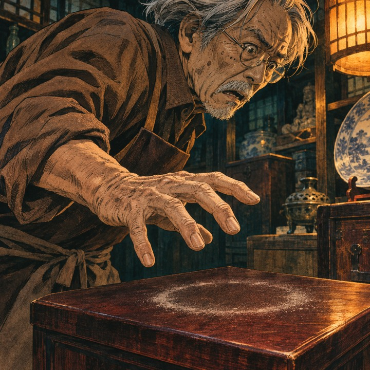
聞き込み・蔵の市
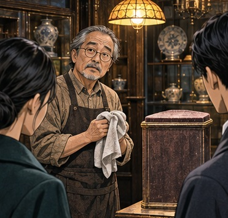
値札を替えて戻ったら、空っぽで。毎朝、私が拭いていた壺です。
店主が見せた台帳写真
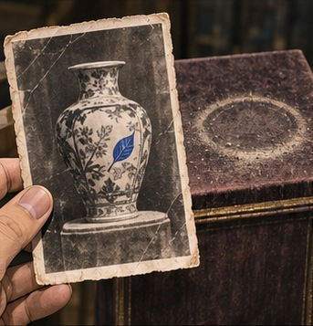
1 / 4
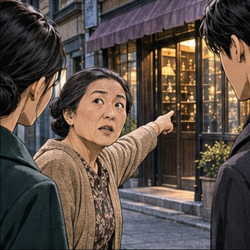
店の前を走る男がいました。橋の方へ。
壺は持っていましたか？
最初の客が見たのは背中だけだった。
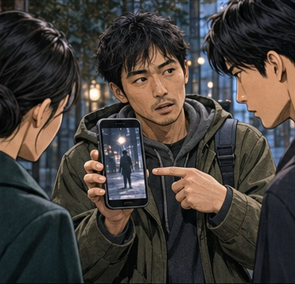

橋のたもとで時計塔を撮っていたら、この人が走り込んできて。
目撃者の写真
店を出た朝倉は、橋のたもとまで駆けた。
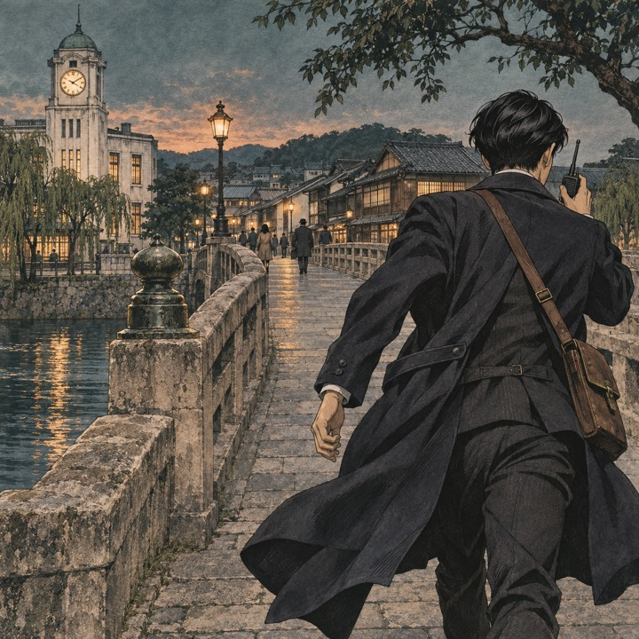
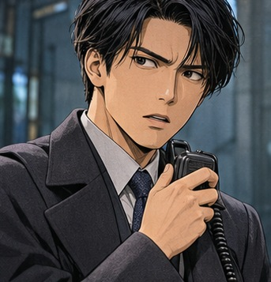
橋を渡って対岸へ逃げたんでしょうか。向こうを捜してもらいます。
2 / 4
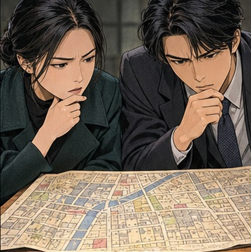
町から橋を見ると、塔はどっちの手の側？
左です。でも、写真では男の右にある。どうしてだ？
水城は案内図を半回転させた。
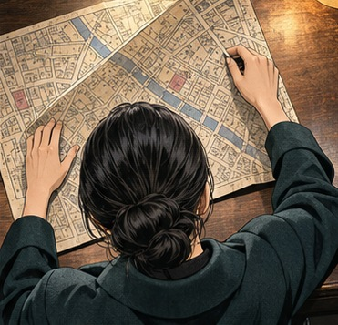
撮影者（北側）
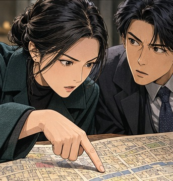
塔が右に来た。……この人、町のほうへ走ってる！
3 / 4
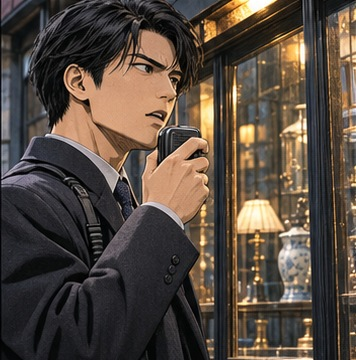
橋の北側に加えて、町側の路地もお願いします。壺には青い葉が一枚。
無線を切ったあと、店主は、壺が消えたころは記念メダルの半額セールで売り場が混んでいたと話した。
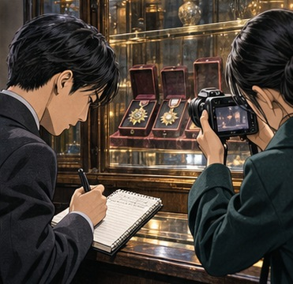
その売り場にいた人なら、壺を見てるかもしれない。売り場も撮っておこう。
4 / 4